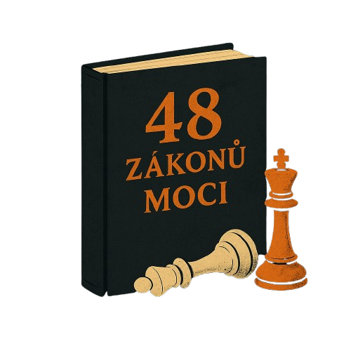

48 ZÁKONŮ MOCI PROČ MUSÍŠ ZNÁT PRAVIDLA HRY

Když slyšíš „48 zákonů moci“, možná si představíš nějaký Machiavelliho fígle nebo podrazy na vysoké úrovni. Pravda je, že tahle hra probíhá všude – v práci, ve vztazích, mezi kamarády i v rodině. A když ty pravidla neznáš, jsi jen pěšák, který si neuvědomuje, že ho někdo tahá za nitky.
Znáš ten pocit, že ti něco nesedí, že tě někdo využívá, ale nedokážeš přesně říct jak? Že když něco chceš, vždycky ti někdo skočí do cesty? Pak věz, že znát zákony moci není o tom, být hajzl, ale o tom, nebýt naivka.
Co jsou 48 zákonů moci?
Autorem je Robert Greene, který v knize rozebírá moc jako univerzální hru, která se hraje odjakživa. Těch 48 zákonů jsou principy, jak moc získat, udržet a neztratit. Některý zákony jsou tvrdé, jiné rafinované, všechny ale mají jedno společné – moc je reálná síla, a když ji neznáš, budeš ve hře jen loutkou.
Top 10 zákonů, které musíš znát
• Nikdy nepřevyšuj mistra.
Nepředstírej, že jsi lepší než ten, kdo je nad tebou. Přiznej mu jeho sílu, nech ho zazářit – jinak si získáš nepřátele.
• Nikdy nevěř úplně svým přátelům, nauč se využívat nepřátele.
Přátelé mohou být zákeřnější než nepřátelé, protože znají tvoje slabiny.
• Skrývej své záměry.
Když odhalíš svoje karty, dáváš soupeřům výhodu. Mlčenlivost je moc.
• Vždycky říkej méně, než je potřeba.
Mluvení je energie, někdy je lepší naslouchat a pozorovat.
• Hodně záleží na reputaci – chraň ji jako život.
Bez dobré pověsti jsi bezmocný, ale i falešná pověst může být mocná zbraň.
• Přilákej pozornost za každou cenu.
Bez pozornosti nejsi nikdo, i negativní pověst ti může otevřít dveře.
• Nezávislost a sebeovládání jsou základ.
Když jsi závislý na někom, ztrácíš moc nad sebou.
• Vyhýbej se nešťastníkům a neúspěšným lidem.
Negativita je nakažlivá a může tě stáhnout dolů.
• Buď nevyzpytatelný.
Lidé si tě pak nedokážou zaškatulkovat a nejsi snadný cíl.
• Plánuj dopředu.
Moc máš tehdy, když vidíš víc kroků než ostatní a jsi připravený.
Jak se tyhle zákony používají dnes
V práci, když se hádáš o pozici nebo větší respekt. Ve vztahu, když chceš, aby tě partnerka brala vážně. Na sociálních sítích, kde je boj o pozornost a status. Když něco chceš, musíš umět strategii, ne jen sílu. Nejde o to být manipulátor, ale být o krok před tím, kdo tě chce zmasakrovat.
Proč ti znalost zákonů moci zachrání krk
Když víš, jak tahle hra funguje, už nejsi bezbranný. Neznamená to, že budeš všechny podvádět, ale že nebudeš sám sebe podvádět nevědomostí. Když přijde někdo, kdo zná pravidla, může tě snadno zmást, pokud nevíš, jak hrát. Mít moc je o přežití v dnešním světě, kde se hranice mezi přáteli a nepřáteli ztrácí.
Kdy se zákonům radši vyhnout
Ne každý zákon je pro každou situaci. Některé jsou tvrdé a mohou spálit mosty, které se ti pak budou hodit. Když se snažíš budovat dlouhodobé vztahy nebo pracovat v týmu, potřebuješ vyvážit moc s důvěrou. Buď opatrný, aby ses s mocí nepřepálil a neudělal ze sebe nepřítele pro celý svět.
Jak být vědomý hráč a nenechat se ojebat
Nauč se rozeznávat, kdy někdo hraje mocenskou hru. Poznej, co za zákony používá. Nauč se je používat i ty – ne kvůli zlu, ale kvůli sebeobraně. Buď chlap, co zná pravidla a nepodlehne pocitu, že je obětí. Máš v rukou nástroje, jak se nenechat zničit.
Závěr
Moc není špinavá věc, pokud víš, jak s ní zacházet. Znát 48 zákonů moci znamená mít návod, jak se nenechat přejet, jak nehrát roli bezmocné oběti a jak si vybojovat svůj prostor ve světě, kde slabí končí pod nohama silnějších. Buď vědomý hráč – ne figurka v cizích rukou.